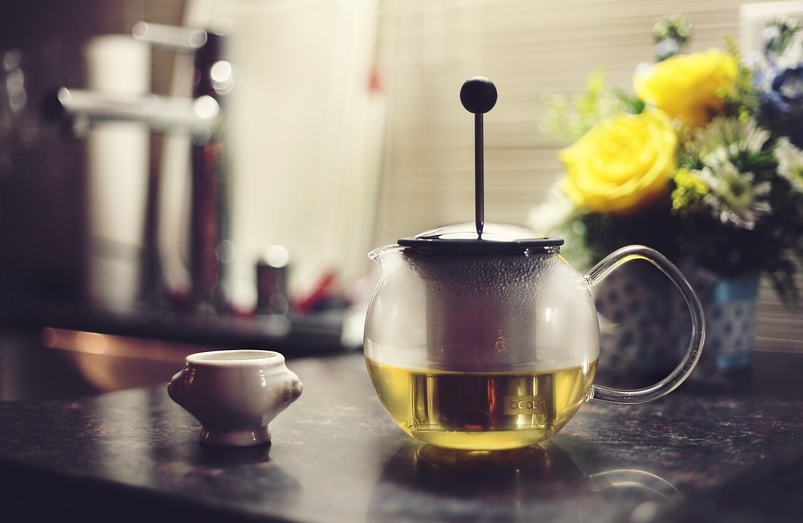
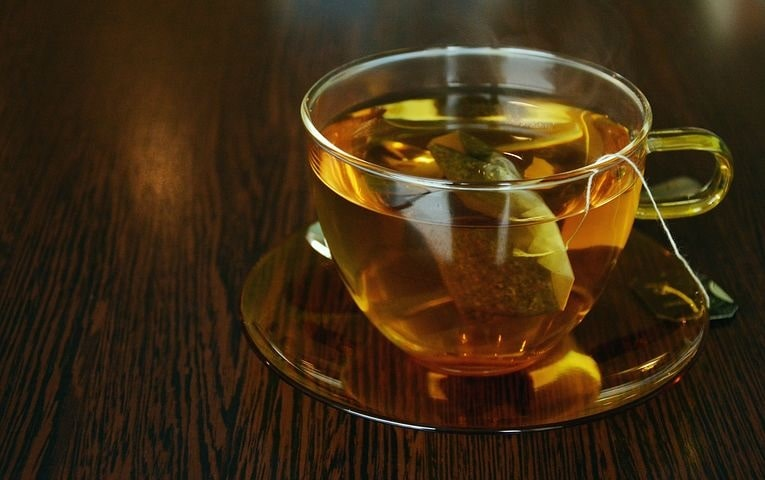

Tea Tips
By Mihaela Uzunova
Tea is one of the greatest drinks ever. Not only is it super healthy and delicious, but it also helps you with hunger. It prevents and help heal many diseases. There are so many positive aspects of drinking this magical beverage that it is no surprised it had been cherished since times unknown.

In fact, tea is the most consumed drink in the world after water. It is very easy to make (just pouring some boiling hot water with a bag of your choice in a cup), very tasty and has so many kinds and flavours that you will be blown away! Here I will share some tips that you might find helpful.
- Always make sure that your tea has been stored right. This means you will not lose its smell and good taste by storing it unproperly.
- Do not heat your water in the microwave. Better to heat it on a cooker or kettle.
- Also make sure that your water temperature is right
- Do not add honey right after you pour the water, wait a few minutes, because otherwise the properties of the it will be destroyed by the temperature
- When there comes a moment of hunger, just make a cup of tea and you will eliminate some amount of potential calories
So enjoy a cup of tea right away and feel the energy it gives to your body and soul. Tea is always a good idea. Enjoy!
